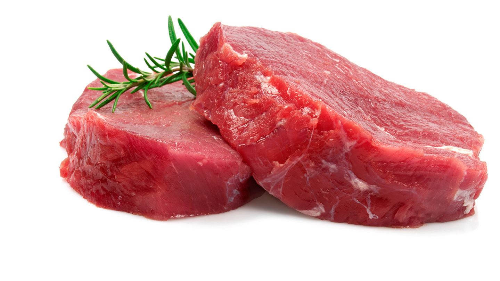
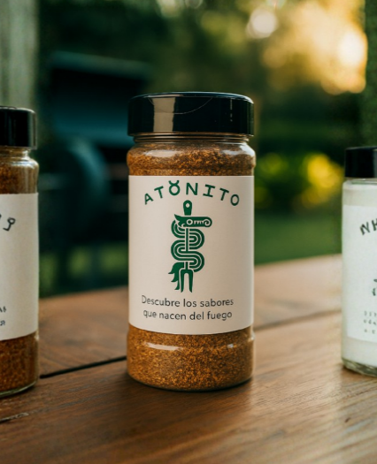

STEAK SELLADO AL SARTÉN con Mantequilla y Romero
Perfect Pan Seared Steak
INGREDIENTES
- • 2 steaks New York Strip, Ribeye o Top Sirloin (1¼” de grosor)
- • 1 cdta sal de mar gruesa
- • ½ cdta pimienta negra recién molida
- • ½ cda aceite de alto punto de humo
- • 2 cdas mantequilla sin sal
- • 2 dientes de ajo aplastados
- • 1 ramita de romero o tomillo fresco
Corte recomendado
Ribeye / New York Strip
Sartén · Sellado fuerte
Especias Recomendadas

Sal de mar
Pimienta negra
Romero fresco
🔥 Preparación
- – Seca muy bien los steaks con papel de cocina.
- – Déjalos reposar a temperatura ambiente 30–40 min.
- – Sazona generosamente con sal y pimienta justo antes de cocinar.
- – Calienta un sartén de hierro a fuego medio-alto hasta que esté muy caliente.
- – Añade el aceite y coloca los steaks sin moverlos por 4 min.
- – Voltea y cocina 3–4 min más para formar costra.
- – Sella los bordes y la parte grasa 1 min.
- – Baja el fuego, agrega mantequilla, ajo y romero.
- – Baña la carne con la mantequilla durante 1 min.
- – Retira cuando esté 5–10°F por debajo del punto deseado.
- – Deja reposar 10 min antes de servir.
💡 Tip Antonito
- El sartén debe estar bien caliente antes de poner la carne.
- No muevas el steak hasta que forme costra.
- Siempre deja reposar para que quede jugoso.